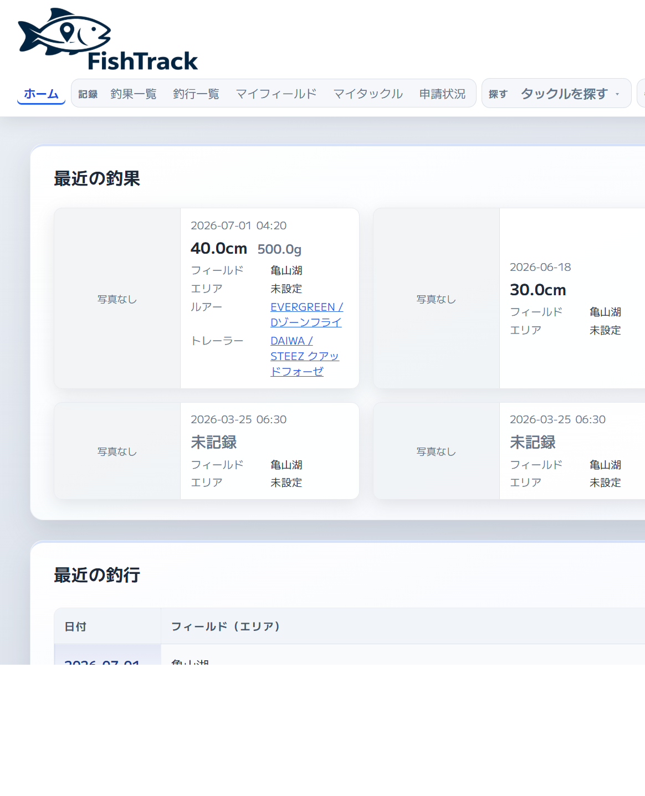
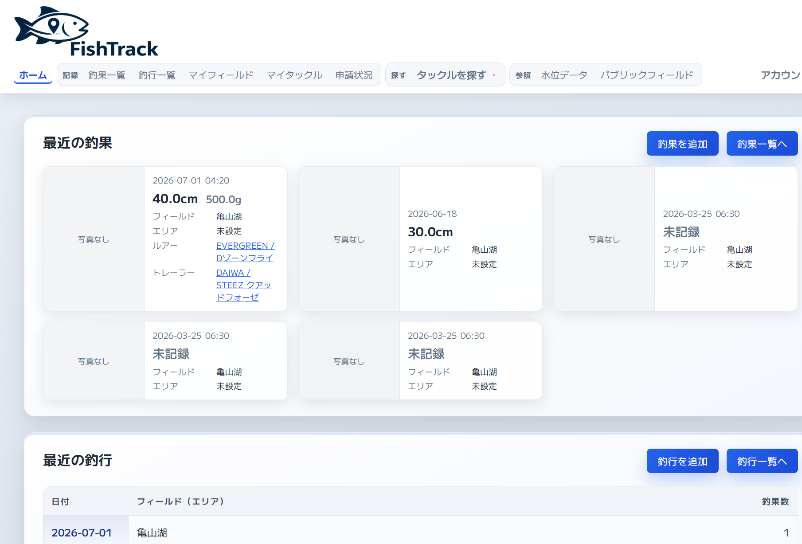
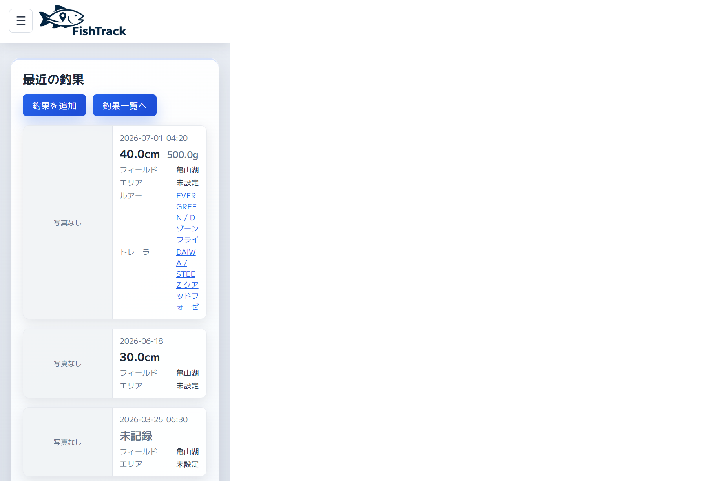
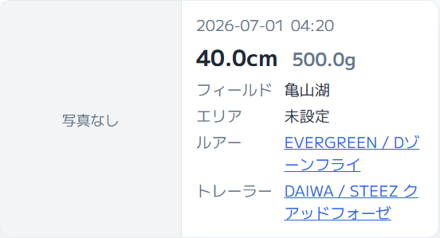
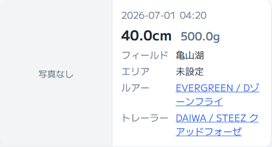
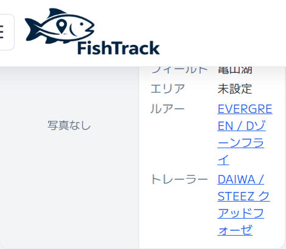

MED
RESOLVED
FishTrack
FT-H14 — 釣果カード情報欄のルアー・トレーラーラベル周りが空く
画面: ホーム最近の釣果／BEST5、釣果一覧、釣行詳細の紐づく釣果。 観点: 視認性・SP／PC。案A採用。案B・案Cは不採用。 2026-09-02: 製品 CSS 実装・再診断済み。 関連 FT-H13（表示項目の揃え）
対象箇所
- URL／画面:
/dashboard、/catch/、/trip/<id>の.catch-card - 位置: 横長カード右本文の dl（ラベル列｜値列）。特に「ルアー」「トレーラー」行
- 部品／セレクタ:
.catch-card:has(> .catch-card__thumb) .catch-card__details > div（grid-template-columns: 4.25rem minmax(0, 1fr)）、 同セレクタのddはoverflow-wrap: break-word、 サムネ幅9.5rem。 推薦カード用の汎用.catch-card__details > div（5.5rem）は対象外で残置。 CSS:fishtrack_tail.css - 対象外:
同一行カードの stretch 余白（今回の主因ではない）。
釣果詳細ページ本体（カードではない）。
フィールド推薦カード（
.field-recommendation-card）。 表示項目の過不足（FT-H13 解決済み）。 ルアーリンクの行き先（FT-O20）。 管理者専用画面。MyPokedex（釣果カードなし）
改善前の事象
PC 1280 でカード幅約 368px。右の情報欄はラベル 88px ＋ 値 94px の2列。 「フィールド」「エリア」は各 19px（1行）なのに、長い製品名の「ルアー」は 37px（2行）、 「トレーラー」は 56px（3行）。ラベル文字は1行のままセルだけ高くなり、 左列のラベルの下（行内）が空く。2列の縦ラインは維持されている。



何が問題か
視認性: スキャンする左列（ルアー／トレーラー）だけ上下が開き、1行のフィールド行とリズムが揃わない。 ラベルを縦中央にしても空は残る（上下に分散するだけ）。 操作性は壊れていないので MED。
実施した改善
案A採用（2026-09-02）。
サムネ付き横長カードは2列を維持。ラベル列を 4.25rem、値は minmax(0, 1fr)、
overflow-wrap: break-word。サムネ幅は 9.5rem のまま。
案B（サムネ 5.5rem）・案C（ラベルの下に値の1列）は不採用。
改善サンプル: fishtrack/samples/ft-h14-a.html （案A）。比較用 fishtrack/samples/ft-h14-b.html （案B・不採用）／ fishtrack/samples/ft-h14-c.html （案C・不採用）



| 観点 | 改善前 | 案A（採用） | 案B（不採用） | 案C（不採用） |
|---|---|---|---|---|
| 情報欄 | ラベル｜値の2列（5.5rem） | 2列（ラベル 4.25rem） | 2列（ラベル 4.25rem） | 1列（ラベルの下に値） |
| サムネ | 9.5rem | 9.5rem | 5.5rem | 9.5rem |
再診断
2026-09-02 にローカル Docker の
/dashboard（PC 1280・SP 390）と /catch/（PC 1280）を ai-user で確認した。
サムネ付きカードのラベル列は 68px（4.25rem）、サムネ列 152px（9.5rem）、値は break-word。
PC のトレーラーは 56px（3行）→37px（2行）。ルアーは2行のまま。
SP はサムネ幅不変のため値列約 62px で折り返しは残る（案Aのデメリットどおり）。
採用範囲を満たしたので RESOLVED とする。